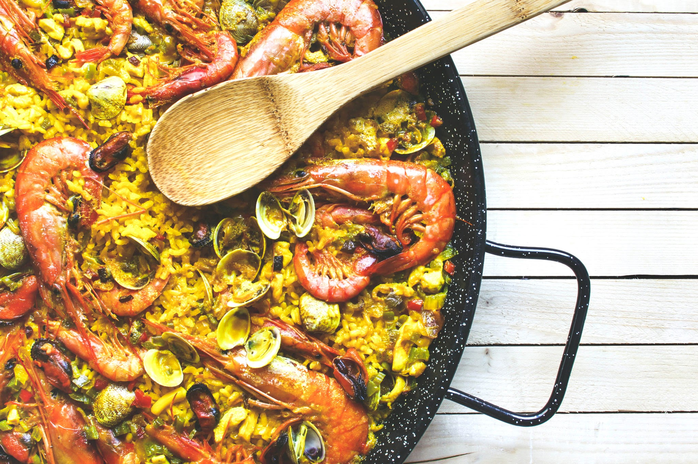

Paella

Description
Originating in the Valencia region, paella is a saffron-infused rice dish cooked in a large, shallow pan. The classic Valencian version is made with chicken, rabbit, and green beans, but seafood paella (paella de marisco) and mixed paella are also very popular.
Ingredients
- Rice
- Meat
- Beans
- Vegetables
Steps
- Place the paella pan (paellera) on the heat and add a generous amount of olive oil.
- Add the chicken and rabbit pieces to the hot oil. Brown the meat thoroughly on all sides to create a deep, rich flavor.
- Push the meat to the side of the pan and add the green beans and lima beans. Sauté them for a few minutes until they begin to soften.
- Create a space in the center of the pan and add the grated tomato and paprika. Cook for a minute, stirring the tomato to create a sofrito, before mixing it with the rest of the ingredients
Home